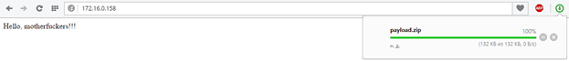

In this article, With the use of FakeImageExploiter tool, you can access a remote computer using a payload embedded in an image file.
This tool takes one existing image.jpg file and one payload.exe file (user input) and creates a new payload (agent.jpg.exe) that, when launched, initiates the download of the 2 previous files stored on the apache2 web server (. jpg + payload.exe). This module also changes the agent icon to match a single file.jpg icon. Then uses 'hide - known file extensions' to hide the .exe extension (final: agent.jpg.exe)
Using:
FakeImageExploiter - Stores all files in apache2, creating an archive, starts apache2 and Metasploit services (handler) and provides a URL to be sent to the target device. As soon as the user runs the executable, our picture will be loaded and opened in the default image viewer, afterwards the malicious information will be executed and we will have an active meterpreter session. But it also saves the agent (not zip) to the FakeImageExploiter / output folder if we want to deliver agent.jpg.exe using a different attack vector. This tool also creates a cleaner.rc file to remove payloads left on the target host. I advise you to migrate to another process before using it. Supported distributions: Linux Ubuntu, Kali, Mint, Parrot OS
Dependencies:
- Xterm, zenity, apache2, mingw32 [64], ResourceHacker (wine)
- Automatic installation of ResourceHacker.exe to ../.wine/Program Files /…
Installation:
cd FakeImageExploiter
chmod + x FakeNameExlpoiter.sh
./FakeImageExploiter.sh
Running :
Before starting it is necessary:
Create a payload (using the methods available to you, Veil-Evasion, Metasploit, Venom, I have listed not the most reliable ones, but it will work for the test)
Download any image in .jpg format
As a test, I will use (the payload generator will be Veil-Evasion) type - python / meterpreter / rev_https.
Everything is ready to create the final file - archive:
We will combine these files into one archive. Launch FakeImageExploiter:
Click ok, choosing Windows 7. For the program to work correctly, you need ResourceHacker, if it is not installed, the program will install it itself:
When everything is ready, we launch the framework:
After the necessary services are launched, we will be asked to select the payload first, and then the image. There is also such a moment, in order to use the payload in the .exe format, you need to change the following in the settings file:

On:
Following the prompts, we create an archive and a link to it on the web server:
Now it remains to share the link with our target host:
Downloading the archive:.
We unpack and start viewing the image.
All, of course, nothing, but it is clear that this application, Windows 8 swears, I have not tried it on younger versions. In general, it's not bad if you approach with imagination, you can benefit. And of course, an active meterpreter session opens:
In the task manager, this abomination looks like this:
If readers would like to use the information for personal gain, then the author is not responsible for any harm or damage caused.
Note - This is for educational purpose only..
Categories: Hacking, Events Tags: #Kali, #hiddeneye